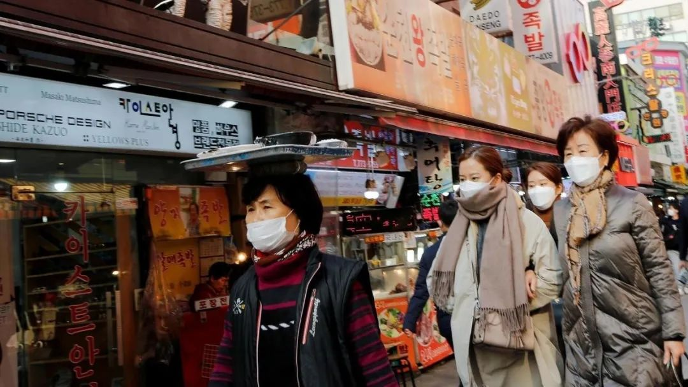
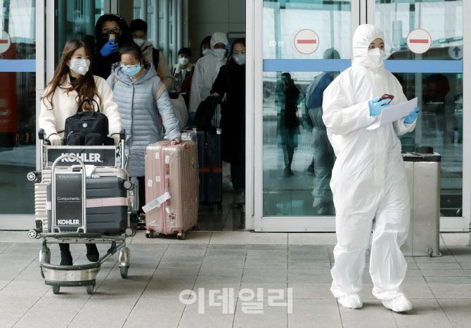
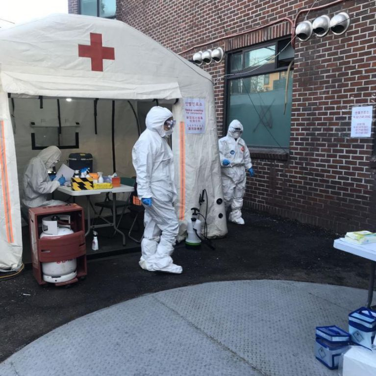

超1200例确诊、总统身边有感染者，韩国为何突成第二大疫情国
原文链接 备份链接 韩国1月20日发现首例确诊病例，此后一个月疫情发展缓慢，到2月18日确诊31例。2月19日后突然暴增，一周新增超过1200例。 18日确诊的第31号患者，被视为“超级传播者”。 韩国新冠疫情的一大特征是，在特定群 …

截至今天（2月28日）16时，韩国确诊新冠肺炎感染者的总数已经升至2337人，单日累计确诊新增571例感染者，再次刷新韩国出现新冠病毒以来单日新增确诊感染者人数最大值。
一位在韩国处于居家隔离期的中国留学生为《人物》写下了她这些天的观察和感受。
文｜****曾诗雅
编辑｜****金石
导语图｜****REUTERS
1
首尔时间2月20日11点10分，穿过浓白的云层，飞机降落在首尔金浦机场。在众多同学的航班三番五次被取消的情况下，我按着原计划，回到了这座城市。
看着机窗外阳光普照，我忍不住往同学群里发消息：「宅家二十三天后，我终于又站在了艳阳下。」
比回复来得更早的是一条新闻推送——「韩国今日新冠肺炎确诊病例累计82例，新增31例」。我有点愣住，登机前确认的数值还停留在51例，只是两个小时，增量几乎是过去一个月的确诊总和。
一个月之前，1月20日，韩国疾病控制中心称，韩国境内出现了首位新型冠状病毒确诊者。确诊者是一名35岁的中国妇女，来自武汉。彼时，韩国媒体把这次疫情称作「武汉肺炎（우한폐렴）」。直到23天后，新型冠状病毒的韩文名（신종 코로나바이러스 감염증，코로나19）才被正式官宣，那一天，韩国累计确诊新冠肺炎28例，随后三天，这个数值也并未增长。
据留在韩国的同学观察，疫情初期，韩国的民众大多觉得新冠肺炎离自己很远。尽管确诊者途经的建筑物被封锁了，但在其余地方，人们仍然在照常生活：每日乘坐地铁、公交出行，公司的聚餐惯例依旧进行，闹市街头依然人头攒动……只有口罩在变得紧俏，但在首尔的大街上，戴口罩出行的人依然寥寥。
确诊人数激增源自第31号确诊者。2月18日，一名61岁的女性由于交通事故住进了大邱寿城区的一家医院，因出现异常症状，对其进行核酸检查。检查结果为阳性，这名女性成为韩国第31号确诊者。随后，新闻曝光第31号确诊者是新天地教徒，曾经参与礼拜活动，接触了1001人，是超级传播者，且两次拒绝了医生的检查劝告。

韩国新天地教会的聚会 图源网络
根韩国《中央日报》称，这名女性的确诊使得一部分大邱居民不敢出入新天地教会附近。从大邱地铁1号线大明站出站的市民中，九成都戴着口罩。有人回忆，前一天，戴口罩的仅三、四人。
失控似乎正在发酵，但在首尔，此时对于普通的韩国人而言，与新冠肺炎更相关的，依然是中国。
机场通道上，每隔数十米就立着「中国入境旅客专用道」的指示牌，牌下还会放上一瓶消毒洗手液。通道一侧的玻璃墙外就是候机大厅，旅客不多，免税店也很冷清，没有人迹，只剩几位戴着口罩的店员聚在一起聊天。
换作往常，一批批代购定会鱼贯而入，熟练地采购、提货、装货，拆下一摞又一摞的包装盒，提着大包小包赶去不同的城市。
人群在海关检疫区形成队伍。所有从中国入境的旅客都必须提交健康状况调查表，测量体温，下载自我诊断的手机APP，并被要求此后居家隔离的14天里，每天如实填写身体状况，进行申报。
下载软件的队伍再往前，还有一批工作人员会当面拨打旅客的电话，确认每一个申报的号码都能接通。
这一天，我走出机场比往常多耗费了一小时。坐在回家的车上，向窗外望去，这座城市同过去一样明亮：阳光肆意洒下，落进汉江粼粼的水波，落尽桥上奔流的车群；热闹也没有消减，街边鳞次栉比的店铺照常营业，公交站前的排队人群绵延十几米……这一路，半数的人还没戴起口罩。

到达仁川机场的中国留学生 图源edaily
2
这是我在韩留学的第四学期，我和我的同学大多都修完了学分，考过了综合毕业考，也提交了语言成绩，距离毕业条件，仅差一篇硕士论文。我们谁也没有想到，一场疫情使得所有的「定数」都成了「变数」。
我下飞机后，韩国新冠肺炎的确诊人数仍在增加，最终，2月20日这一天达到104人，并出现了首个死亡病例。暴增的数值带来了不安，晚间，韩国购物网站coupang上的口罩几乎售罄，余下的单价则高达3000韩元（约人民币18元），而往常，同款的口罩最贵时也不过人民币8元，有韩国网友不解地在网上问道：「这价格是正常的吗？」
两天后，2月22日，确诊病例升至433人，但同一天，首尔光化门广场上，泛国民斗争本部依旧召开了名为「纠正大韩民国国民大会」的千人集会。集会现场，首尔市政府和警方禁止集会的条幅和指示牌随处可见，广播也大声劝诱解散，但集会者对此置之不理。
召集集会的是韩国基督教总联合会代表会长全光勋牧师。他登上舞台高喊「聚集在这里的人们比我们的生命更热爱国家和祖国」，「即使来到这里感染病毒结束生命,我们也会保卫祖国的大韩民国」。
下午1点40分，首尔市长朴元淳也来到了光化门广场，呼吁大家停止集会，赶快回家，但部分集会参加者们对他发出嘘声。

2月22日，到达首尔光化门广场对游行队伍进行解散劝告的首尔市长朴元淳 图源NEWSIS
一天后，韩国政府将新冠病毒疫情预警级别提升至最高的「严重」。在韩国，传染病预警被分为「关注」「注意」「警戒」「严重」四个级别。在发布「严重」预警之后，政府可采取最高级别的应对措施，包括下令各级学校停课、禁止集体活动等。上一次「严重」发生在11年前，2009年甲型H1N1流感病毒导致韩国263人丧生。但即便在「严重」的预警下，光化门前的集会依旧，上门来的快递员也没有配戴任何口罩、手套。
2月24日，韩国确诊新冠肺炎病例833例，其中超450例与大邱市的聚集性病例相关，当日，从朝鲜时代就存在的大邱西门市场休业六天。大邱开始被看作是「韩国的武汉」，新闻报道里，超市前买口罩的队伍长达数百米，人们开始囤积食物，有些超市的货架已被抢购一空。
朋友佳贤是大邱人。她对我说过很多次，有机会一定要请我去一趟大邱。新冠肺炎在中国蔓延时，她曾给我发过信息，说担心我的近况。数周之后，却换我问她，有没有囤好食物，有没有买到口罩。
佳贤在家中囤了可供两周的食物，又在网上下单了50个口罩，但口罩要等到三周后才能发货。不过，她觉得新闻有夸张报道的成分，疫情虽然危险，但大邱不少超市货量充足。「生活其实没有什么变化，就是不能出门了，口罩变得很难买吧。」电话那头，她的语气并不沉重。
疫情爆发期到来，韩国民众的愤怒与谴责出现在青瓦台的请愿里。新天地的信徒成为超级传播者后，2月22日，青瓦台请愿板上出现了要求「强制解散新天地」的请愿，该请愿在6天内超过了100万人。
首尔也「终于」受到了疫情的冲击，有同学跑了多家药店和超市，问到最便宜的口罩是4000韩元/个（约人民币24元）；因为订单暴增，快递的速度开始变慢，网站上的生鲜售罄时间越来越早，公务员考试、大型企业的招聘会被一一推迟，一些教会甚至推出了线上教堂礼拜。
越来越多的人自发地选择不出门。社交网络上，有人开始询问宅家可做的事，还有人想起上次约会见男友咳嗽而焦虑不安……

2月24日，大邱某家超市前排队买口罩的队伍图源首尔新闻
3
在国内时，留学生群里最常提的问题是：「要出国么？」而现在，我们议论最多的已经变成了「要回国么」？
尚在国内的同学纷纷改签机票，推迟入境，据韩媒报道，2月24日至25日，成均馆大学原计划有91名中国学生入住宿舍，但最终只迎来12人，同一时期，庆熙大学入住首尔宿舍的中国留学生也少了15名。
影响却远在数字之外。今年从舞蹈系取得硕士学位的赖馨本来要参加于2月23日举行的毕业典礼，但因为新冠肺炎，学校取消了毕业典礼。
2月24日，她回到学校领取毕业证书。为了弥补遗憾，她从校门口租借了学士服，拍摄了几张毕业纪念照。
照片里，赖馨站在梨大标志性的大教堂前，手捧花束，把学士帽抛向青天，学士服的裙摆张开得像把扇子。她在朋友圈里形容这学士服像哈利波特的魔法袍。
更多的毕业生没能穿上这一届的学士服，甚至没有入境，亲自领取自己的毕业证书。影响甚至波及全校——2月26日，梨大的一名韩国学生家人被确诊为新冠肺炎。该名学生前一天进出过的两栋工科大楼被封锁。如果该学生确诊，那么梨大将会成为第一所因确诊新冠肺炎而全校停学的大学。

2月27日，岭南大学生活馆前为中国留学生检查体温 图源联合新闻
同日，韩国通过「新冠肺炎三法」修正案，内容包括有关口罩和洗手液等物品禁止出口的依据、对疑似传染病患者拒绝入院和治疗的处罚依据、可禁止来自或经过传染病流行地外国人入境等。
2月27日，是陈能猫解除隔离的第一天。她是我们留学生中最早回到韩国的。因为担心被限制入境，家在安徽的她2月12日便回到了学校，比原计划整整提早了12天。抵达当天，首尔大雨，可能是因为着了凉，她在入境韩国后的第五天出现了咽喉疼痛、呼吸困难的症状，在拨通韩国应急医疗电话进行报备后，她去所在区的保健所做了一次核酸检测，在韩国，核酸检测和新冠肺炎的治疗费用均为免费。
检查结束临走前，医护人员告知她：「因为你是中国来的，不能坐公共交通工具回家。我们会调救护车送你回家。」

陈能猫接受核酸检测的现场 图源陈能猫
第二天，检测结果出来，是阴性。但由于身体仍有不适的症状，她依然决定在解除隔离后去趟医院。她去了家附近的首尔大学医院，这家医院作为韩国的三级医院，收治对象是加入国民保险、且一二级医院无法治疗的患者。但院方建议她去保健所就诊，而保健所却说现在所里只诊治新冠肺炎，不诊治一般的疾病。如果她执意要在首尔大学医院看病，最早的预约排到了3月25日。
同样的难题也真实地发生在大邱。截至2月27日，处在重灾区的大邱累计确诊达1017例，其中只有447人住院治疗，剩下570人在家隔离。目前，整个大邱全市的病床资源不足800张，韩国总统文在寅表示，2月底大邱市的病床会增加到1600张。
回国的话题再一次在同学群里被提起。但此时，多趟回国的机票票价已经随着恶化的局势而飙升，有机票的价格在24小时内变动了11次。一班从首尔金浦机场飞往上海虹桥机场的经济舱机票价高达2万6千多，是往日的10倍。
4
随着肺炎疫情的越来越严峻，整个韩国似乎也被割裂成了线上和线下两个世界。
同样是2月27日，韩国第13例因冠状肺炎去世患者死于家中、还有公务员疑似因疫情防控过劳而死。同日，举办了57年的镇海的樱花节取消、大中小学皆延期开学……恐惧和悲伤在网络新闻的评论区蔓延，韩国民众对现状的追责随处可见，「弹劾文在寅」一度登上了韩国搜索网站naver的热搜榜，对新天地教会的声讨此起彼伏。
但在网络世界之外，韩国人的生活则要显得平静很多。
有人在推特上讲述因为疫情，自己的房东承诺未来六个月，每月给自己减少10万韩元（约600元人民币）。也有人上传自己挂在家门的口罩照片，说要送给前来送货的快递员。
还有位隔离者在脸书上分享了自己的隔离生活：他上传自己从辖区卫生所收到的物资照片，不由地评价道「谁看了能知道我得了新冠肺炎啊，太丰盛了」；某一天，他在脸书上写下隔离的沉闷与无聊，邻居家的一对夫妇看见后偷偷为他点了炸鸡和啤酒。朋友家的女儿也亲自买来一些鲫鱼饼和鸡蛋糕挂在他家门口——这位隔离者觉得自己「仿佛在拍电影」……

脸书上韩国网友分享的隔离日常，图为朋友家女儿送来的食物 图源网络
截至今天（2月28日）16时，韩国确诊新冠肺炎感染者的总数已经升至2337人，单日累计确诊新增571例感染者，再次刷新韩国出现新冠病毒以来单日新增确诊感染者人数最大值。
一位在昨天去过医院和超市的朋友告诉我，现在的首尔超市门口会写着「要求戴口罩入内」，医院也要求戴口罩入内，还需测量体温后才能进入，但是她走在路上，十个人里面至少仍有四个人没有戴起口罩。但仅仅过了一天，多则新闻里，首尔人也像大邱人一样，排着队买起了口罩。2月28日，首尔的大街上，几乎人人都戴着口罩。
启程回到韩国之前，我想着解除隔离后要去新村的自助烤肉店大吃一顿，开学时还要穿上春节没能穿出门的新衣，周末站在弘大的街头沐浴繁华灯火，感受人潮涌动——现在，不知道这些心愿要攒到3月的哪一天，或者4月，甚至更久的以后……

金浦机场免税店过去的繁华 图源网络
（文中陈能猫为化名）

原文链接 备份链接 韩国1月20日发现首例确诊病例，此后一个月疫情发展缓慢，到2月18日确诊31例。2月19日后突然暴增，一周新增超过1200例。 18日确诊的第31号患者，被视为“超级传播者”。 韩国新冠疫情的一大特征是，在特定群 …
原文链接 备份链接 韩国发生新冠肺炎超级传播事件，美国担忧日本、新加坡、韩国、泰国及越南等国及台湾地区出现社区传播 文 |《财经》特派记者 金焱 发自华盛顿 编辑 | 苏琦 当地时间2月20日，美国疾病控制与预防中心(CDC)在网站上指 …
原文链接 备份链接 澎湃新闻记者 于潇清 近日，韩国和日本新冠肺炎疫情防控形势日趋严峻，引起国际社会关注。 据韩国中央防疫对策本部2月28日最新通报，截至当天上午9点，韩国再新增新冠肺炎确诊病例256例，累计2022例，死亡病例达13例。 …
原文链接 备份链接 截至目前，巴西确诊拉丁美洲首例新冠肺炎病例。疫情正在从意大利向国外蔓延，周边邻国瑞士、奥地利相继出现首例确诊病例，西班牙新增一例确诊病例，确诊患者均与意大利有关。 截至25日，中东有新冠肺炎确诊病例的国家已增至9个： …
原文链接 备份链接 据路透社及伊朗当地媒体25日报道，伊朗卫生部副部长伊拉吉·哈利奇被确诊感染新冠肺炎病毒。路透社称，伊朗卫生部发言人已经确认了这一消息，并表示哈利奇正在接受治疗。 种种现象都显示，伊朗的疫情正在愈演愈烈，而其控制疫情的 …